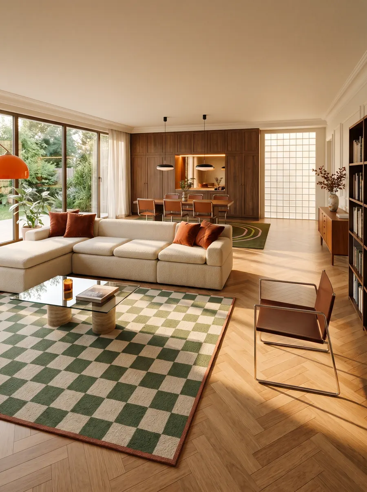

Des espaces
qui se ressentent.
Manifeste
J'aborde chaque espace comme une mise en scène sensible : la lumière, la matière et le parcours racontent une histoire avant même qu'on la lise.
Sélection
Projets
Tertiaire, hôtellerie-restauration, retail et résidentiel : chaque projet part d'un récit et se termine dans le détail.

Tiers-lieu étudiant · 4e annéeMarelle
L'ancienne école Gilibert devient un tiers-lieu pour étudiants : coworking, bibliothèque, café et repos, pensés comme un parcours de l'ouvert vers le concentré.
Découvrir le projet
Drive & Drink · Projet libre 3e annéeAPEX
Bar immersif inspiré de la Formule 1 : simulateurs, bar central en forme de circuit, lounge paddock et cinéma, dans un ancien local de 350 m².
Découvrir le projet
Retail · Lyon 5e · 3e annéeMaison Isobathe
Une boutique de plongée pensée comme une descente sous l'eau, et son identité Maison Isobathe : du bleu clair de l'entrée jusqu'au bleu nuit des profondeurs.
Découvrir le projet
Cas réel · Marseille · 3e annéeAnnette
Cas réel pour Annette, restaurant du groupe DÉVO à Marseille : 176 m² en terre cuite et chaux, présentés aux fondateurs. Classé 2e de la promotion.
Découvrir le projet
Résidentiel · Biarritz · 2e annéeMaison Ilbarritz
Rénovation complète et extension d'une maison familiale de 200 m² près de la plage d'Ilbarritz, entre zelliges, bois sculpté et vue sur l'océan.
Découvrir le projetAtelier 3D
Rendus





À propos
Un regard d'architecte, une précision d'artisan.
Je suis en 5e année d'architecture intérieure et design global à CREAD Lyon. J'aime les projets où tout se tient : un récit clair, un plan qui le sert et des détails dessinés jusqu'à la menuiserie.
Mon mémoire de fin d'études porte sur l'expérience sensorielle et sur les technologies qui savent s'effacer dans l'espace. Cette question guide aussi mon regard sur l'hôtellerie et les lieux d'exception, vers lesquels j'oriente ma carrière.
Sur le terrain, plusieurs stages puis mon alternance chez Horus Design m'ont appris le chantier, les relevés, le rendez-vous client et le mobilier sur mesure. Côté outils, je passe du plan technique au rendu photoréaliste, et j'explore les nouveaux usages de la 3D.
Outils
Parcours
Formation & expérience
Architecture intérieure & design global
Titre RNCP de niveau 7. Projets tertiaires, ERP, patrimoine et urbanisme ; mémoire sur l'expérience sensorielle.
Chargé de projet — alternance
Transformation et optimisation d'ERP partout en France. Rendus 3D photoréalistes, plans et mobilier sur mesure, rendez-vous et suivi clients. AutoCAD, SketchUp, IA.
Stage assistant architecte d'intérieur
Visuels 3D, conception de meubles sur mesure, rendez-vous clients et gestion de projet.
Stage en agence d'architecture intérieure
Suivi de chantier et rendez-vous clients, relevés et métrés. InDesign, SketchUp, V-Ray, ArchiCAD, AutoCAD.
Architecture intérieure & cuisiniste
Rendez-vous clients, conception de mobilier sur mesure sous SketchUp et Twinmotion, visites et réunions de chantier.
Stage artisan
Isolation intérieure, cloisons et peinture ; réunions de chantier et fournisseurs.
Stage en maîtrise d’ouvrage
Suivi de chantier, rendez-vous clients, relevés et métrés.
Contact